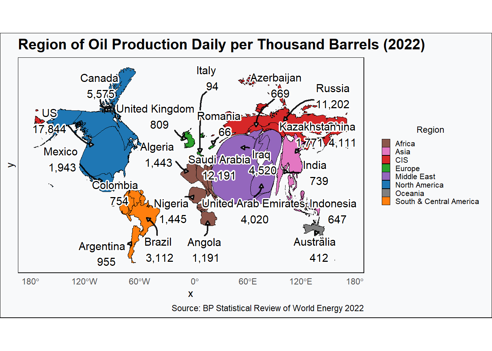
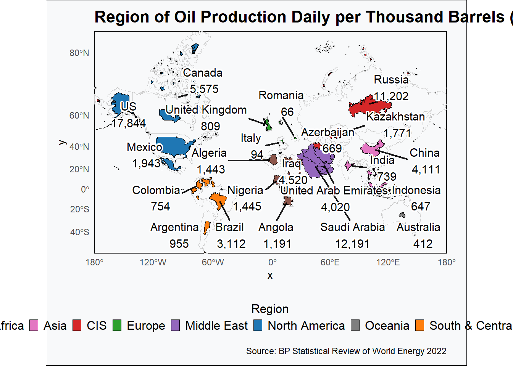

# A tibble: 70 × 2
`Country/Region` Production_2022
<chr> <dbl>
1 Canada 5575.
2 Mexico 1943.
3 US 17844.
4 Total North America 25361.
5 Argentina 955.
6 Brazil 3112.
7 Colombia 754.
8 Ecuador 481.
9 Guyana 278.
10 Peru 128.
# ℹ 60 more rows
df_clean <- df %>%filter(!str_detect(`Country/Region`, "^Total|^Other|^Non|^OPEC|^OECD|European Union|World|USSR")) %>%mutate(iso_a3 =countrycode(`Country/Region`, "country.name", "iso3c"),continent =case_when( iso_a3 %in%c("USA", "CAN", "MEX") ~"North America", iso_a3 %in%c("ARG", "BRA", "COL", "ECU", "GUY", "PER", "TTO", "VEN") ~"South America", iso_a3 %in%c("GBR", "NOR", "DNK", "ITA", "ROU") ~"Europe", iso_a3 %in%c("RUS", "KAZ", "AZE", "TKM", "UZB") ~"Asia",TRUE~countrycode(iso_a3, "iso3c", "continent") ),region =case_when(# North America iso_a3 %in%c("USA", "CAN", "MEX") ~"North America",# South & Central America iso_a3 %in%c("ARG", "BRA", "COL", "ECU", "GUY", "PER", "TTO", "VEN") ~"South & Central America",# Europe iso_a3 %in%c("DNK", "ITA", "NOR", "ROU", "GBR") ~"Europe",# CIS (Commonwealth of Independent States) iso_a3 %in%c("AZE", "KAZ", "RUS", "TKM", "UZB") ~"CIS",# Middle East iso_a3 %in%c("IRN", "IRQ", "KWT", "OMN", "QAT", "SAU", "SYR", "ARE", "YEM") ~"Middle East",# Africa iso_a3 %in%c("DZA", "AGO", "TCD", "COG") ~"Africa",# For any other countries, use continent as fallbackTRUE~ continent ) )df_clean
# A tibble: 50 × 5
`Country/Region` Production_2022 iso_a3 continent region
<chr> <dbl> <chr> <chr> <chr>
1 Canada 5575. CAN North America North America
2 Mexico 1943. MEX North America North America
3 US 17844. USA North America North America
4 Argentina 955. ARG South America South & Central Ameri…
5 Brazil 3112. BRA South America South & Central Ameri…
6 Colombia 754. COL South America South & Central Ameri…
7 Ecuador 481. ECU South America South & Central Ameri…
8 Guyana 278. GUY South America South & Central Ameri…
9 Peru 128. PER South America South & Central Ameri…
10 Trinidad & Tobago 73.9 TTO South America South & Central Ameri…
# ℹ 40 more rows
Visualisation 1
This visualization presents a cartogram where countries are resized based on their oil production in 2022, color-coded by region, and annotated with the top two oil-producing countries in each region.
# Load the base world mapworld <- rnaturalearth::ne_countries(scale ="medium", returnclass ="sf")# Merge with oil production dataworld_data <-left_join(world, df_clean, by =c("iso_a3"="iso_a3"))# Project the mapworld_data_proj <-st_transform(world_data, crs =3857) %>%filter(!is.na(Production_2022), !is.na(region))# Create the cartogram distorted by Production_2022carto <-cartogram_cont(world_data_proj, weight ="Production_2022", itermax =8)# Define a manual color palette for regionsregion_colors <-c("North America"="#1f77b4","South & Central America"="#ff7f0e","Europe"="#2ca02c","CIS"="#d62728","Middle East"="#9467bd","Africa"="#8c564b","Asia"="#e377c2","Oceania"="#7f7f7f")# Prepare centroids of countries in cartogram for label placementcountry_centroids <-suppressWarnings( carto %>%st_centroid() %>%mutate(x =st_coordinates(geometry)[,1],y =st_coordinates(geometry)[,2] ))# Select top 5 countries by Production_2022 per regiontop5_labels <- country_centroids %>%group_by(region) %>%slice_max(order_by = Production_2022, n =3) %>%ungroup() %>%mutate(country_display =ifelse(`Country/Region`=="Russian Federation", "Russia", `Country/Region`),label =paste0(country_display, "\n", format(round(Production_2022, 0), big.mark =",")) )# Plotggplot(carto) +geom_sf(aes(fill = region), color ="black", linewidth =0.1) +geom_text_repel(data = top5_labels,aes(x = x, y = y, label = label),color ="black",size =4,segment.color ="black",segment.size =0.8,segment.alpha =0.9,segment.curvature =0.1,arrow =arrow(length =unit(0.15, "cm"), type ="closed"),box.padding =0.5,point.padding =0.3,force =3, # stronger repulsionforce_pull =0.4,max.iter =5000,min.segment.length =unit(0.3, "lines"), # force visible arrowsmax.overlaps =Inf,bg.color ="white",bg.r =0.15 ) +scale_fill_manual(values = region_colors,name ="Region" ) +guides(fill =guide_legend(override.aes =list(color ="black"),title.position ="top",title.hjust =0.5 )) +theme_minimal(base_family ="sans") +theme(plot.title =element_text(size =15, face ="bold"),panel.grid =element_blank(),panel.background =element_rect(fill ="#f8f9fa"),plot.background =element_rect(fill ="#f8f9fa"),legend.position ="right",legend.title =element_text(size =9),legend.text =element_text(size =8),legend.key.size =unit(0.3, "cm"),legend.spacing =unit(0.2, "cm"),legend.box.margin =margin(0, 2, 0, 2) ) +labs(title ="Region of Oil Production Daily per Thousand Barrels (2022)", caption ="Source: BP Statistical Review of World Energy 2022" )

Visualisation 2
ncarto <-cartogram_ncont(world_data_proj, weight ="Production_2022", k =0.5, # Scaling factorinplace =FALSE) # Allow separation of polygonsoil_production_plot <-ggplot() +# First layer: Original world map as background outlinegeom_sf(data = world_data_proj, fill =NA, color ="gray80", linewidth =0.2, alpha =0.4) +# Second layer: Non-contiguous cartogram with region colorsgeom_sf(data = ncarto, aes(fill = region), color ="black", linewidth =0.1) +# Label the countriesgeom_text_repel(data = top5_labels %>%# Recalculate centroids for the non-contiguous cartogrammutate(geometry =st_centroid(ncarto$geometry[match(iso_a3, ncarto$iso_a3)]),x =st_coordinates(geometry)[,1],y =st_coordinates(geometry)[,2] ),aes(x = x, y = y, label = label),color ="black",size =4,segment.color ="black",segment.size =0.8,segment.alpha =0.9,box.padding =0.4,point.padding =0.3,force =4,max.iter =5000,max.overlaps =Inf,bg.color ="white",bg.r =0.15 ) +scale_fill_manual(values = region_colors,name ="Region" ) +guides(fill =guide_legend(override.aes =list(color ="black"),title.position ="top",title.hjust =0.5,nrow =1 )) +theme_minimal(base_family ="sans") +theme(plot.title =element_text(size =16, face ="bold"),panel.grid =element_blank(),panel.background =element_rect(fill ="#f8f9fa"),plot.background =element_rect(fill ="#f8f9fa"),legend.position ="bottom",legend.title =element_text(size =12),legend.text =element_text(size =12),legend.key.size =unit(0.3, "cm"),legend.spacing =unit(0.2, "cm"),legend.box.margin =margin(5, 5, 5, 5),# Reduce plot margins to maximize map sizeplot.margin =margin(10, 20, 10, 10) ) +# Adjust the coordinate ratio to expand the mapcoord_sf(expand =FALSE) +labs(title ="Region of Oil Production Daily per Thousand Barrels (2022)",caption ="Source: BP Statistical Review of World Energy 2022" )# Display the plotoil_production_plot

# Save the plot in pngggsave("oil_production_map.png", oil_production_plot, width =12, height =8, dpi =300)